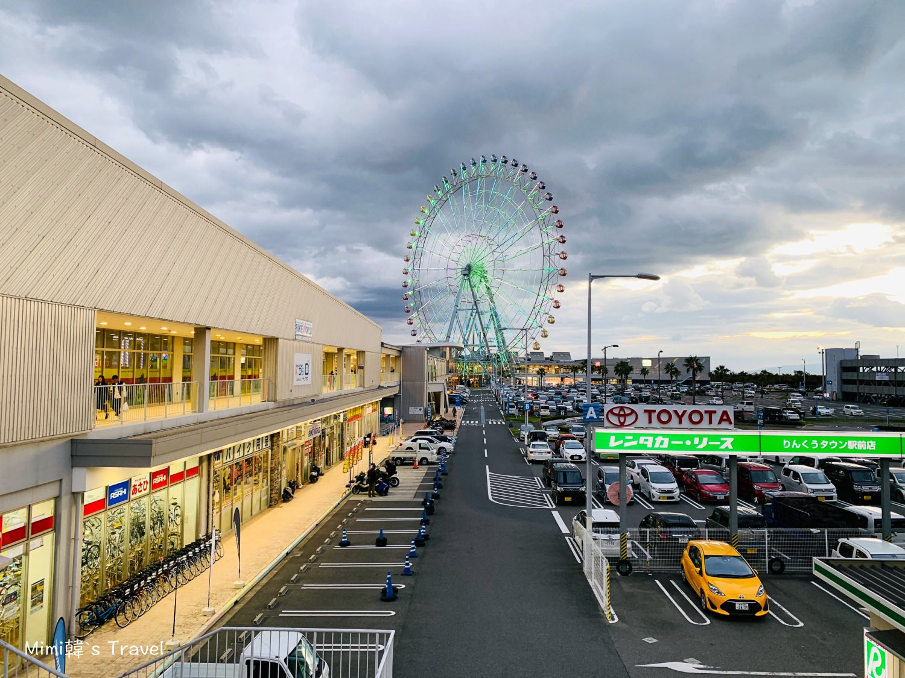
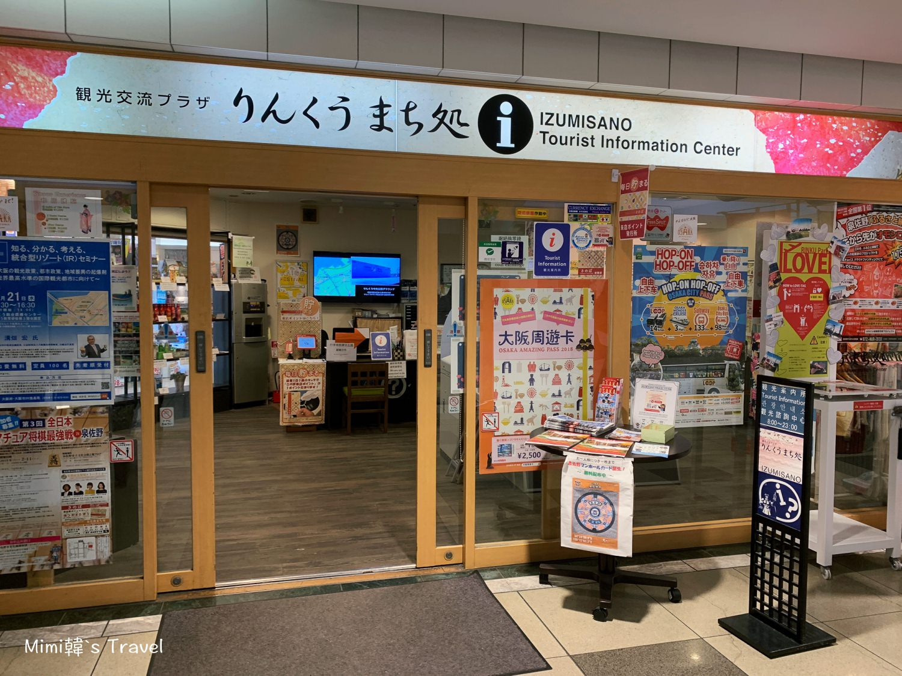

10:00
🧳 飯店退房 Check-out
10:00 - 11:10
🚃 大阪梅田 ➡️ りんくうプレミアム・アウトレット
從大阪駅搭乘 JR 關空快速（関西空港行），直達りんくうタウン駅，不需轉車。車程約 63 分鐘，票價 1,000 日圓。搭車月台：2 樓 1 號線。
出站後跟著「りんくうプレミアム・アウトレット」指標走過天橋即可抵達，步行約 6 分鐘。
11:10 - 17:30
🛍 臨空城 OUTLET 購物＋寄放行李


臨空城站內置物櫃：約 400~800 日圓／件。數量有限，看到大型空位立刻投幣鎖進去，別猶豫。
臨空城站外交流處：500 日圓／件（人工寄放）。最晚只能放到 19:00，置物櫃全滿時的救星。
Outlet 服務中心：800~1,000 日圓／件。位於海濱區一樓，適合逛到園區才發現置物櫃、交流處都滿的人。
17:30
🚶 離開 OUTLET ➡️ 關西機場
りんくうタウン駅搭乘 JR 或南海電鐵，一站即達關西機場，車程約 10 分鐘。
回程班機 IT 213 20:00 由關西機場起飛（詳見機票頁）。